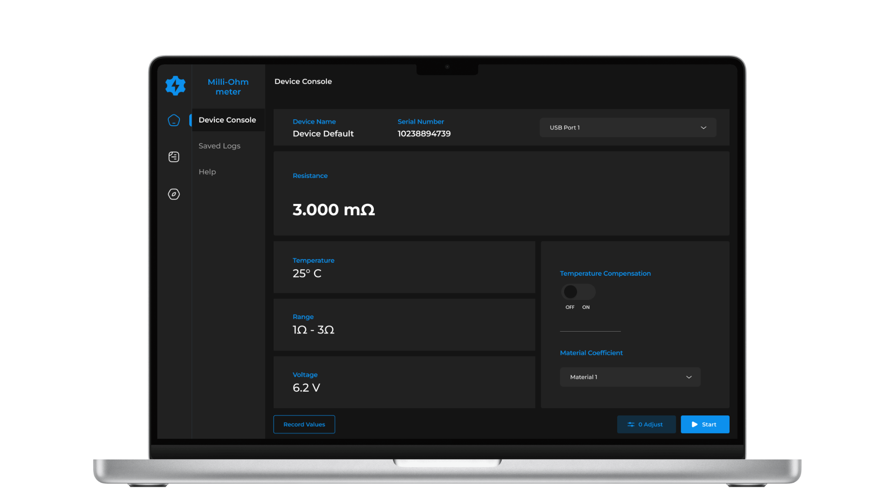
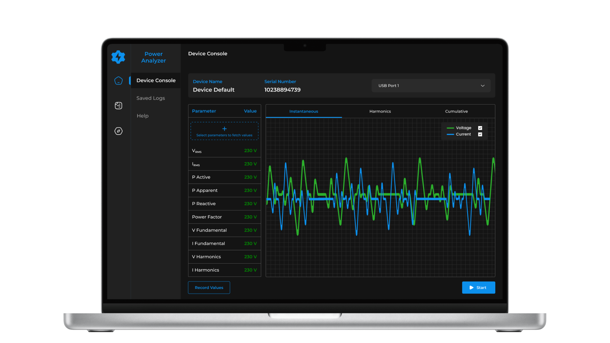
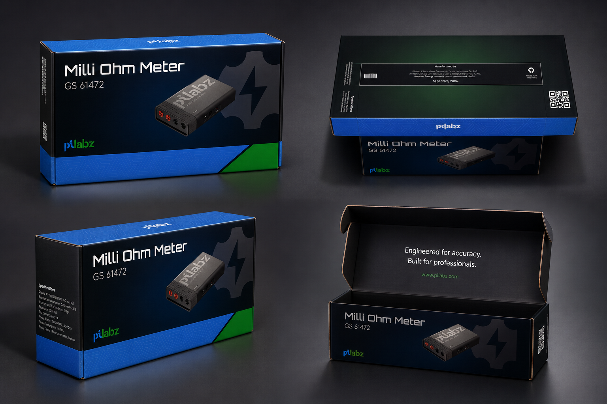
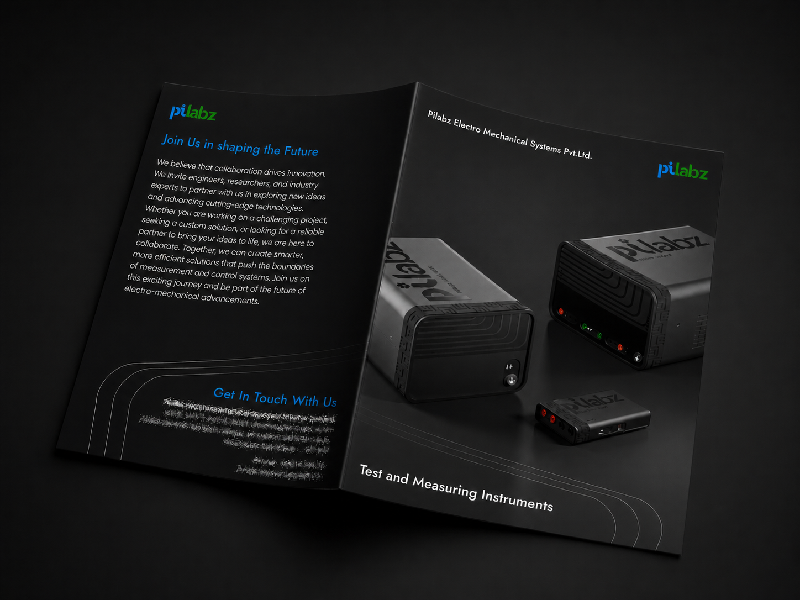
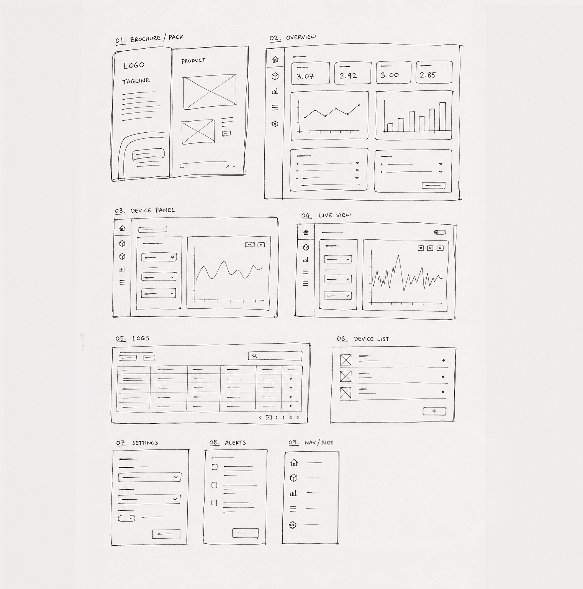
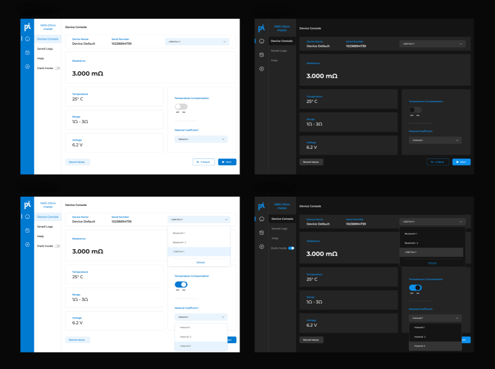

Primary reading dominates
In the milli-ohm meter, resistance gets the full spotlight. Temperature, range, and voltage sit below as supporting context so engineers see the number that matters first.
Desktop apps · Instrumentation · 2024
Two separate instrument apps. A hardware prototype that made it to brochure and packaging. And a design observation during usability testing that ended up reshaping how Pilabz thinks about its entire product suite.
01 — Context
A suite of desktop applications designed for precision measurement and real-time analysis, enabling engineers to connect, monitor, and record critical data. The electrical team needed interfaces for a milli-ohm meter, a power analyzer, and a power supply unit. Engineering assigned them separately, so each got its own desktop app, navigation, and data view.
The milli-ohm meter went beyond software. The hardware prototype was fully built, and the work extended to app UI, product brochure, and physical packaging. The power analyzer followed. Both apps were functionally complete, then market conditions shifted and the products were shelved because the timing was not right.


02 — What I got right
In the milli-ohm meter, resistance gets the full spotlight. Temperature, range, and voltage sit below as supporting context so engineers see the number that matters first.
Material, temperature, and range controls stay visible near the reading instead of forcing engineers through separate configuration screens.
Instantaneous, harmonics, and cumulative views live as one tab switch on the waveform panel, keeping the current session in context.
Logging stays persistent in the bottom-left of both apps, never buried in a menu, so a reading can be captured quickly in a lab environment.
03 — The proposal that changed everything
After both apps were complete, I sat with an electrical engineer for a usability walkthrough. In one session he switched between the milli-ohm app, the power analyzer, and a separate PSU window multiple times, cross-checking readings manually and losing the thread of what he had just captured.
The apps worked fine individually. Together, they created friction nobody had named yet. I documented a platform architecture tree and presented it to the CEO and advisory panel committee. The proposal was approved, both apps were dropped, and the engineering team began work on what eventually became Pilabz UVA.
Evolution path
A usability session, not a strategy meeting, changed the product roadmap. These apps were the research phase that made the right question visible.


Beyond the screen - product packaging and brochure designed for the physical prototype, completing the end-to-end product design scope.


From sketch to screen - wireframes, light mode UI, and dark mode UI designed across the full application.
04 — Takeaways
Correct is not the same as right. Technically sound work can still be solving the wrong problem. I learned to question the framing, not just execute it well.
Proximity is underrated. Sitting next to someone doing their actual job surfaces things no brief captures. I want to keep building that habit into my process early, not as a final check.
Shelved is not failed. Products get killed for reasons outside design. What matters is whether the work held up and whether the thinking carried forward. Here, both did.